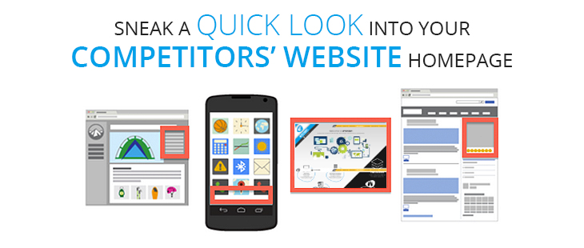

<?xml version="1.0" encoding="UTF-8"?><rss version="2.0"
	xmlns:content="http://purl.org/rss/1.0/modules/content/"
	xmlns:wfw="http://wellformedweb.org/CommentAPI/"
	xmlns:dc="http://purl.org/dc/elements/1.1/"
	xmlns:atom="http://www.w3.org/2005/Atom"
	xmlns:sy="http://purl.org/rss/1.0/modules/syndication/"
	xmlns:slash="http://purl.org/rss/1.0/modules/slash/"
	>

<channel>
	<title>Aggressive Advertising Methods &#8211; Blog</title>
	<atom:link href="https://www.ehorizon.ae/blog/tag/aggressive-advertising-methods/feed/" rel="self" type="application/rss+xml" />
	<link>https://www.ehorizon.ae/blog</link>
	<description></description>
	<lastBuildDate>Thu, 01 Mar 2018 05:29:32 +0000</lastBuildDate>
	<language>en-US</language>
	<sy:updatePeriod>hourly</sy:updatePeriod>
	<sy:updateFrequency>1</sy:updateFrequency>
	<generator>https://wordpress.org/?v=4.4.15</generator>
	<item>
		<title>5 Aggressive Advertising Methods to Surpass Your Competitors</title>
		<link>https://www.ehorizon.ae/blog/2016/08/11/5-aggressive-advertising-methods-to-surpass-your-competitors/</link>
		<comments>https://www.ehorizon.ae/blog/2016/08/11/5-aggressive-advertising-methods-to-surpass-your-competitors/#respond</comments>
		<pubDate>Thu, 11 Aug 2016 11:17:37 +0000</pubDate>
		<dc:creator><![CDATA[eHorizon]]></dc:creator>
				<category><![CDATA[Search Engine Optimization]]></category>
		<category><![CDATA[Social Media Optimization]]></category>
		<category><![CDATA[Aggressive Advertising Methods]]></category>

		<guid isPermaLink="false">https://www.ehorizon.ae/blog/?p=106</guid>
		<description><![CDATA[<p>Rigorous advertising is all about trying your best to survive in the competitive industry. And competitive brilliance is all that is required to set the ball rolling for your business. If you want to steal a march on your rivals, you don’t really have to get dirty with the game. However, a slightly unhealthy competition [&#8230;]</p>
<p>The post <a rel="nofollow" href="../../../2016/08/11/5-aggressive-advertising-methods-to-surpass-your-competitors/index.html">5 Aggressive Advertising Methods to Surpass Your Competitors</a> appeared first on <a rel="nofollow" href="../../../index.html">Blog</a>.</p>
]]></description>
				<content:encoded><![CDATA[<p>Rigorous advertising is all about trying your best to survive in the competitive industry. And competitive brilliance is all that is required to set the ball rolling for your business.</p>
<p>If you want to steal a march on your rivals, you don’t really have to get dirty with the game. However, a slightly unhealthy competition never hurts anyone. Businesses do not believe in keeping things healthy anymore and are adopting some extremely competitive <a href="../../../../digital-marketing.html">advertising strategies to stay ahead</a> in the market.</p>
<p></p>
<p>To beat your competitors, all you have to do is put in extra efforts that you already do with your advertising and marketing promotions, yet, with a difference. Advertising has greatly helped small and large businesses pull off their strategies with panache and with extreme competitiveness. Your business can just be one of them with these helpful advertising strategies that can help you show thumbs down to your rivals’ efforts in the market.</p>
<p>&nbsp;</p>
<ol>
<li><strong>Target Your Competitors’ Audience on Facebook</strong></li>
</ol>
<p></p>
<p>Facebook has made competitive advertising take an interesting turn with interest-based targeting. Facebook users join pages and groups based on their interest in various businesses, industries, brands and products. You can effectively target these users purely based on their interest, especially if their interest lies in any of your competitors’ products and activities.</p>
<p>Through interest-based targeting, you can reach out to your competitors’ market using impactful advertisements and information. Your ads, of course, need to be better and more powerful as compared to your rival business. With keyword research, you can specifically target the audience you need to pull from your competitors and convert them as customers for YOUR business.</p>
<p>&nbsp;</p>
<ol start="2">
<li><strong>Distract Customers from Watching Your Competitors’ Ads</strong></li>
</ol>
<p></p>
<p>It is presumed that you already have the knowledge of keyword targeting through comprehensive and precise research. With the help of this, you need to target the growing multimedia channel of Ad Videos. Whenever you find a customer looking up for your competitors’ videos, you can disrupt your rivals’ ads by squeezing in a short video of your brand right at the beginning.</p>
<p>The point here is to introduce the customer to your brand first before they continue watching the videos they had actually come for. Interrupting your competitor’s ads can give you a great opportunity to showcase users of how your brand or business is better than most others in the market. And if you can come up with an ad that is extremely impressive and impactful, you might actually convince the customer to not watch your competitor’s ad at all.</p>
<p>The main aim is to stop users from watching or getting aware of your competitors’ brand. Before they do, you need to butt in with a watchable advertisement video that can make users believe that you are truly a better option to go with than the brand they had come looking for.</p>
<p>&nbsp;</p>
<ol start="3">
<li><strong>Introduce Gmail Ad Campaigns against Your Competitors</strong></li>
</ol>
<p></p>
<p>Now let’s introduce you to a sneaky tactic of advertising your brand. As you already know the vast usage and effective advantage of <a href="../../../../email-marketing-services.html">e-mail marketing</a>, you can reach out to your competitors’ users with precise keyword targeting using Gmail ads that pop up in the personal inbox of users.</p>
<p>Let’s say that your competition in the market is a big brand like Coca-Cola. There are millions and millions of users subscribed to the company’s emails, newsletters, press releases and other promotional materials. You carefully need to scoop out this audience with keyword-based targeting and a complete Gmail ads campaign for compelling users to check out your brand or website before they actually end up opening and reading your competitor’s email.</p>
<p>By targeting the brand name of Coca-Cola on Gmail, you can introduce impressive ads that are visible under the promotions tab of a user’s personal Gmail inbox. And this ad will be displayed to users when your competitor shoots users an email each time. This way, you at least have a chance to stop users from opening your competitors’ promotional emails by getting your brand to interfere with your rival’s marketing process.</p>
<p>&nbsp;</p>
<ol start="4">
<li><strong>Analyze and Target Your Competitors’ Homepages</strong></li>
</ol>
<p></p>
<p>Google has always made efforts to keep things interesting among rivaling businesses. One way you can beat your competitors is through Google Ad Display technology, which lets you find the most relevant and affinity audience for your business. To begin with the same, it is essential that you visit your competitors’ homepage to observe what type of visitors they have and the behavior of their target audience on the page.</p>
<p>Using the Google ad display technology, you can get a vivid picture of the type of audience your competitors’ are currently relying on, and that is exactly what you need to steal from them. Based on interests and demographics, you can actually customize your advertisement to grab the attention from the specific target audience of your competitors and get the ideal customers with your <a href="../../../../pay-per-click-management-services.html">display ads on Google</a>.</p>
<p>&nbsp;</p>
<ol start="5">
<li><strong>Take Advantage of the Potentiality of Twitter</strong></li>
</ol>
<p></p>
<p>For any form of advertisement, influence on <a href="../../../../social-media-marketing-services.html">social media</a> channels is a must. And one of the biggest social platforms today is Twitter. Twitter has proven to be a great information sharing platform, and it is through this channel that you can steal all the fun your competitors are having.</p>
<p>There are tools available that allow you to download a list of your competitors’ Twitter followers for better audience targeting. Once you have the list in your hand, you can use those Twitter handles to create impressive Twitter ads for your tailored audience. Because that is precisely the market you wish to hit, you need to come up with brilliant ads that can make users switch from the previous brand to yours without having a second thought.</p>
<p>You can easily add the tailored audience generated from the downloaded list of your competitor’s Twitter account and you can quickly get started with attracting your target audience and making them a part of your brand community.</p>
<p>Healthy competition is not always the best option in the cutthroat competition of today. You not only need to exist in the competition but you need to survive. And for the best survival, a little sneaky and competitive advertisement strategies can help your business steal the entire show from your rival industries in the market. Continue to show users how and why you are better than others in the crowd and no one can actually stop your brand from achieving great heights of success.</p>
<p>The post <a rel="nofollow" href="../../../2016/08/11/5-aggressive-advertising-methods-to-surpass-your-competitors/index.html">5 Aggressive Advertising Methods to Surpass Your Competitors</a> appeared first on <a rel="nofollow" href="../../../index.html">Blog</a>.</p>
]]></content:encoded>
			<wfw:commentRss>https://www.ehorizon.ae/blog/2016/08/11/5-aggressive-advertising-methods-to-surpass-your-competitors/feed/</wfw:commentRss>
		<slash:comments>0</slash:comments>
		</item>
	</channel>
</rss>

<!-- Localized -->